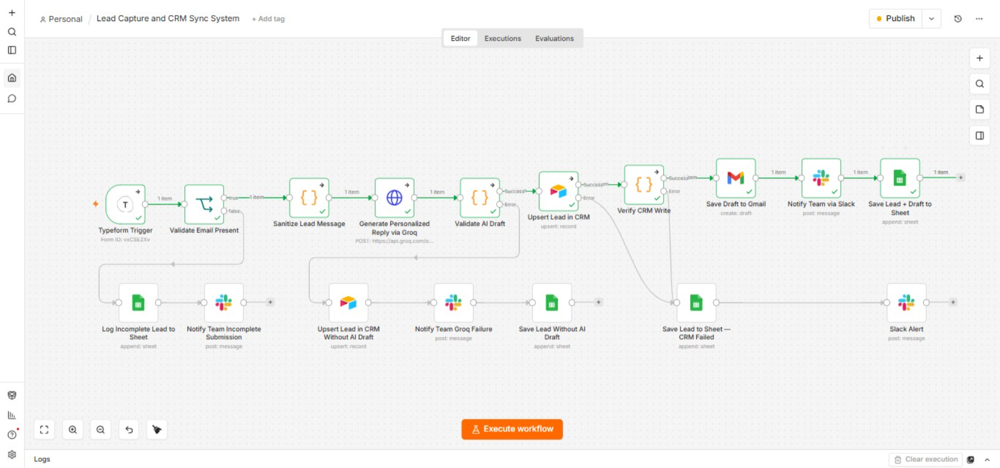

Lead Capture & CRM Sync
An end-to-end AI workflow built in n8n that captures, validates, and responds to every website lead automatically.
Tools & Integrations
Workflow in n8n

The Business Problem
Every lead requires manual work — checking email validity, copying to CRM, writing replies, notifying the team. Manual work means errors are inevitable, time is wasted, and leads get lost.
Why this matters: Manual lead handling doesn't scale. A missed follow-up is a missed sale.
Solution Overview
Validates every submission. Missing fields → logged to "Incomplete Leads" and the team is alerted. Valid leads: message sanitized (500-char cap), Groq AI drafts a reply, saved to the CRM (with verification), Gmail draft created. Slack notification only after verification passes.
Key Automation Steps
- 1Validate Submission: Checks email and name. If missing, logs to "Incomplete Leads" and alerts Slack.
- 2Sanitize Message: Trimmed to 500 characters to keep AI calls cost-efficient.
- 3Generate AI Reply: Groq AI creates a personalized draft. The system checks whether the response is valid or failed silently.
- 4Verify CRM Write: Re-reads what was written to confirm nothing was dropped. Only then creates the Gmail draft and sends the Slack notification.
Reliability & Error Handling
Business Impact
Every lead is validated, synced, and backed up by design. The team is instantly notified with context and a ready-to-review draft. No lead is lost to a silent failure.